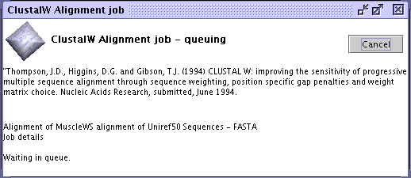

Web services
Jalview includes clients for a variety of web services for both bioinformatic data retrieval and analysis.
Web Service Dialog Box
This dialog box is displayed when a web service job is submitted. It gives the name of the service and any method citation information, and monitors the progress of the calculation. The cancel button will permanently cancel the job, but this is only possible for some services.
The Web Services Preference panel controls the display and appearance of the submission and analysis services in the Web Services menu.
More about Jalview's Web Services
Jalview's distributed computations utilise SOAP and REST
web services exposing sequence alignment, analysis, and secondary
structure prediction programs. Originally, Jalview 2's services were
maintained by the Barton group at the University of Dundee, and ran
programs on the Life Sciences High-performance Computing Cluster.
With the advent of JABAWS,
however, it is possible for anyone to host Jalview web services.